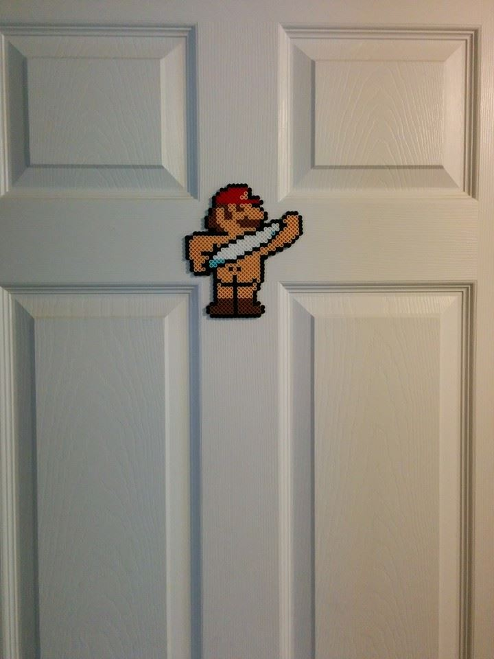
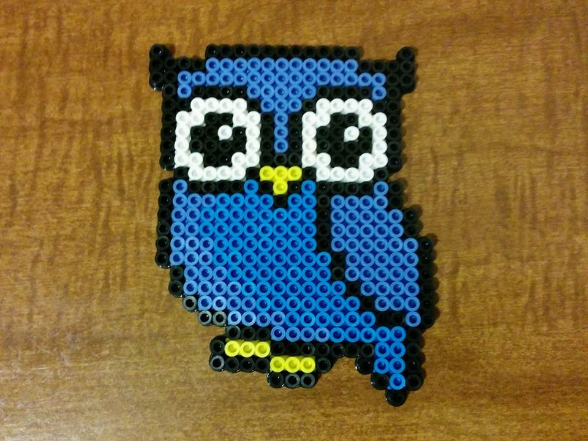
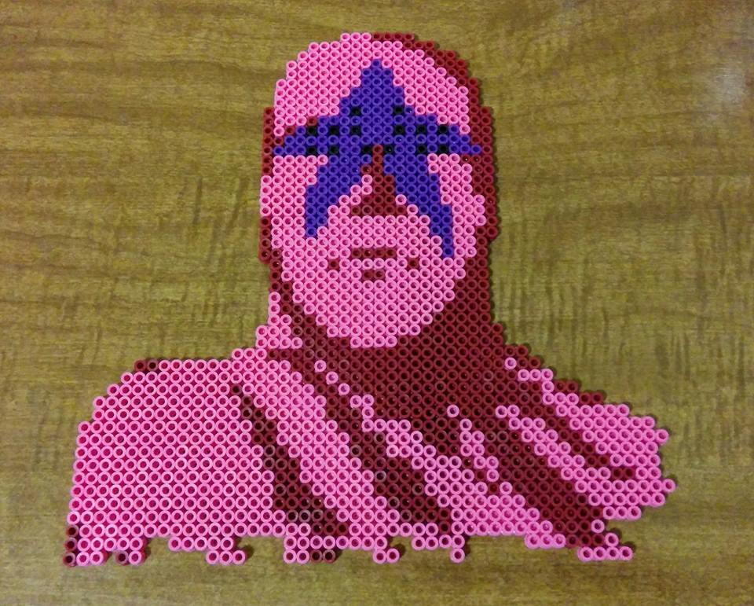
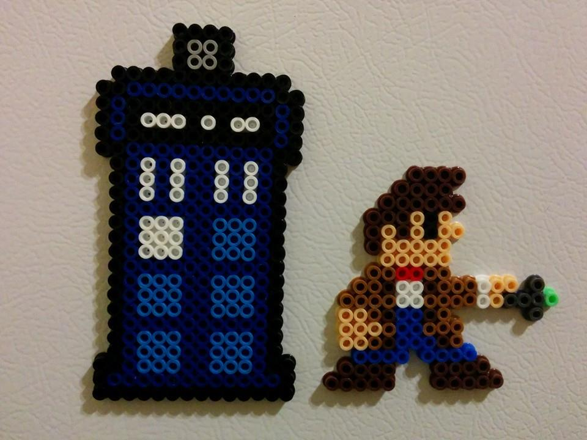
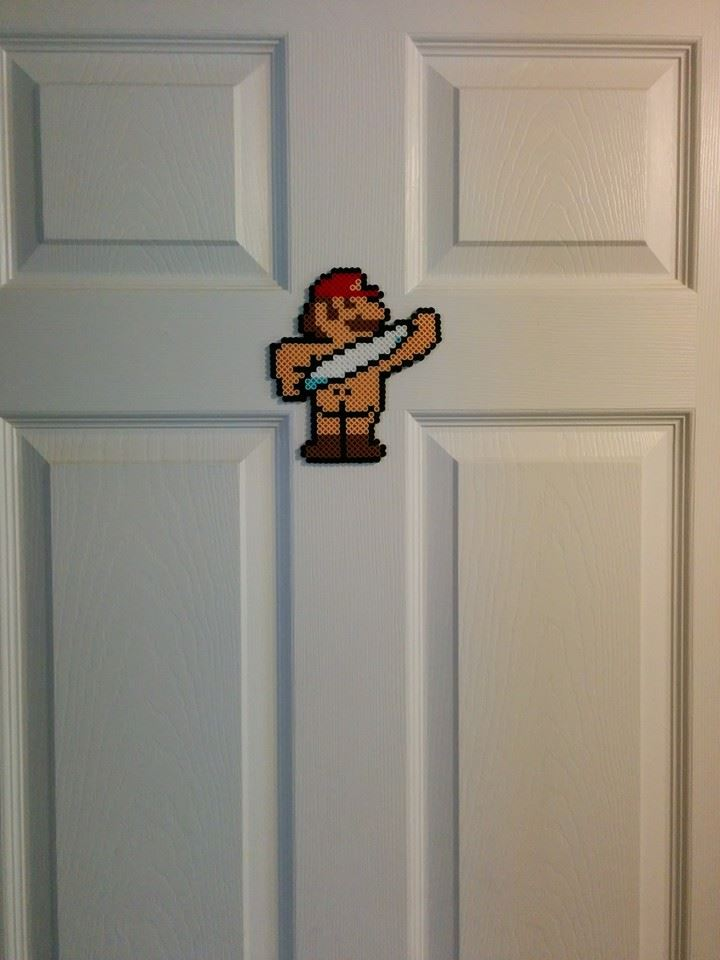
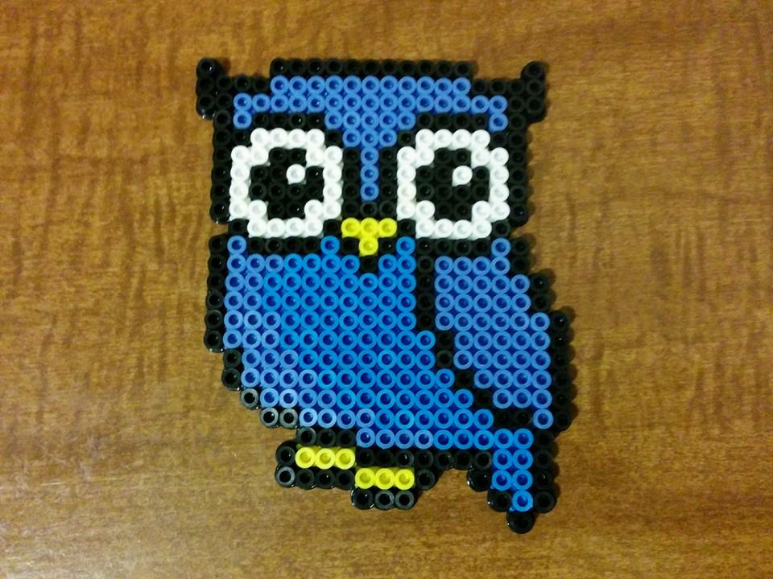
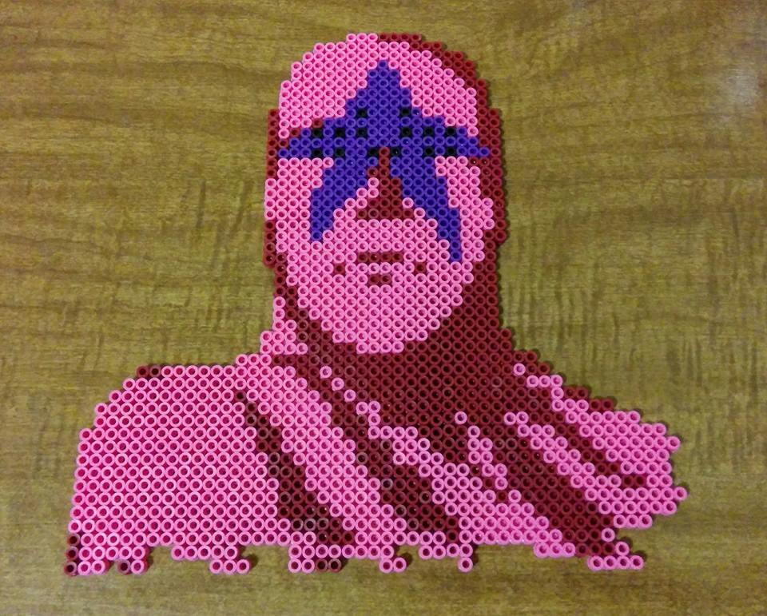
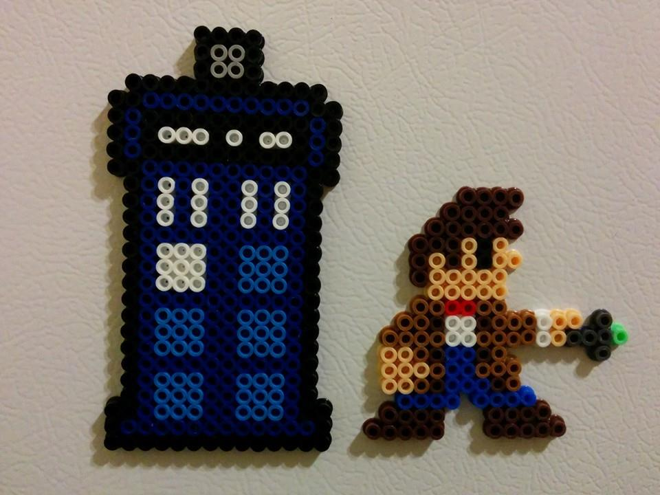

Perlers and the Pixelated Art

As you walk around the Greensboro office, you will see some cubicles with pixelated coasters, art decor, and also Tetris magnets on the break room refrigerator. If you have wondered who created them and what these objects are, direct your attention to Danny Mattice. Danny is a Rural Testing Consultant working on the ABSG team and enjoys working with plastic fusebeads, usually called by brand name Perler. Perler beads were introduced in 1958 by Munkplast AB in Munk-Ljungby, Sweden. Credit for inventing the pegboard used for beading is attributed to Gunnar Knutsson in Vallingby, Sweden towards the beginning of the 1960's. The pegboard allows easier design and creation when the Perlers are positioned on solid plastic pegboards to form pixelated designs (1 bead per pixel). Once the beads are arranged, the pegboard is covered with ironing paper, and then fused together by a clothes iron to melt the beads.
Danny has been making Perlers since December of last year and gets most of his commissions from word of mouth. He tends to make mostly Nintendo characters but if there is a sprite (the term used for a pixelated character or pattern) for any other design, he can make it. Danny started making Perlers after receiving one as a gift from a Nintendo collection. He thought it would be an interesting hobby to get into that would incorporate his artistic side and his favorite things (like Nintendo). Danny creates magnets, key chains, and framed art items to display on your desk or in your home. He also has an eBay store where he sells characters from Nintendo, Doctor Who, Street Fighter, and also Ninja Turtles and Mega Man to name a few. The link to his site can be found here: http://www.ebay.com/usr/nintendodanny .
Danny has sold and shipped items all over the country. Along with his eBay store, Danny will also be a vendor at 2 local events here in Greensboro, the Lawndale BBQ at Geeksboro on August 16th and at the BeerBQue in downtown Burlington on September 29th Danny Mattice's eBay store or if you're in Greensboro, his tables at either of the local events and take a look at these interesting pixel creations.

 






